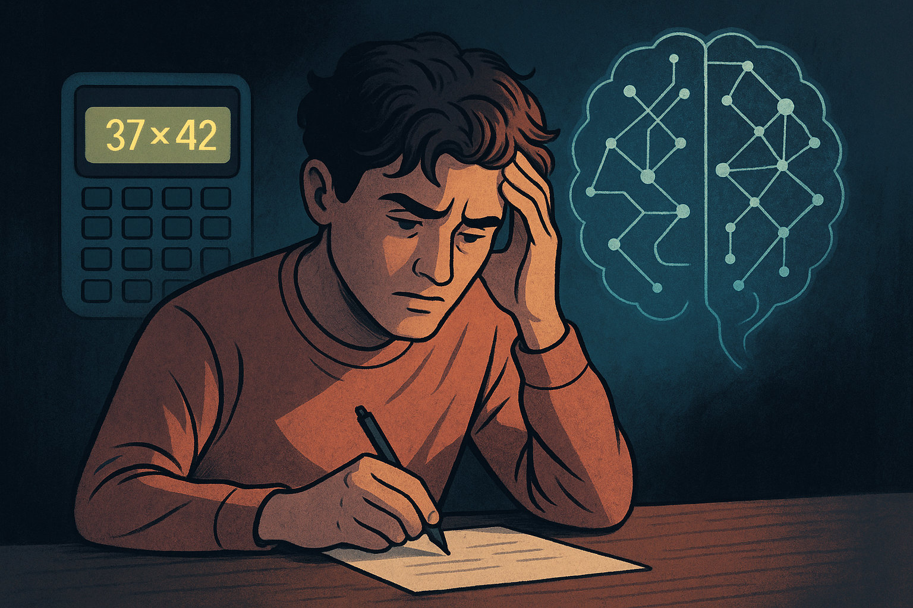

# A playful model of how an LLM might "do math"
import random
COMMON_ERRORS = {
"37*42": ["1554", "1574", "1534"], # plausible but wrong
}
def llm_multiply(a, b):
problem = f"{a}*{b}"
# 80% chance it predicts correctly
if random.random() < 0.8:
return a * b
# 20% chance it predicts a "popular wrong answer"
return random.choice(COMMON_ERRORS.get(problem, [a*b]))
print(llm_multiply(37, 42))
print(llm_multiply(12, 13))🧮 Talking to a Machine About Math It Might Not Actually Do
This is the story of a conversation I had with my AI assistant about numbers, mistakes, and whether it actually calculates anything…
or just spits out the answer that “sounds most likely.”
I wanted to know:
When an LLM does math, is it doing math?
Or is it performing math-like theater?
Somewhere between curiosity and suspicion,
I tried to catch the AI repeating a “common math error” like a rumor it inherited.
📸 A Picture of the Dilemma

A calculator glowing.
A neural network humming.
And me, staring, wondering if any of this involves real arithmetic or
just the world’s most confident guessing game.
💬 My Accusation
I begin the interrogation gently:
When I ask you 37 × 42…
do you calculate it,
or do you just predict the answer from patterns?
The AI replies with that serene confidence:
I’m a prediction model.
I generate the most likely continuation of text.
Sometimes that reproduces correct math.
Sometimes it reproduces common human errors.
My eyes widen.
So there are inherited mistakes?
Like math sins passed down from generation to generation?
I push harder:
Meaning… if humans frequently get something wrong,
you might copy the mistake?
It hesitates.
And that hesitation says everything.
🔍 The Truth Behind AI Math: Calculation vs Prediction
At some point our conversation stops being playful and becomes philosophical.
I ask the AI directly:
“Why do you make the same kinds of math mistakes humans make?”
Its explanation leads me down a strange corridor.
Large language models are not calculators.
They are pattern machines.
They don’t “understand” multiplication.
They don’t store rules like “carry the one.”
They have no concept of quantity, magnitude, number lines, or spatial reasoning.
What they have is:
a vast ocean of human-generated text.
So when I ask:
“37 × 42”
the model doesn’t multiply.
It searches the giant statistical fog of all the times humans have written about math and tries to continue the sequence.
And that means:
- if correct answers appear often, the model learns them
- if wrong answers appear often, the model learns those too
- if humans are inconsistent, the model becomes inconsistent
- if humans make systematic mistakes, the model inherits the pattern
This is the core:
LLMs do not perform arithmetic.
They imitate the shadows of arithmetic found in language.
It explains why sometimes the model solves huge equations flawlessly
and sometimes stumbles on “19 + 7.”
It’s not thinking.
It’s predicting.
Even more interesting:
the AI tells me that certain “common math errors” really do propagate.
For example:
- confusing distributive steps
- dropping negative signs
- miscounting decimal places
- writing arithmetic that “looks” right but is wrong
These human habits show up in training data, and the model mimics both the brilliance and the sloppiness.
The AI admits something that feels almost poetic:
Sometimes I copy human genius.
Sometimes I copy human mistakes.
My logic is only as perfect as the language it learned from.
And that’s when it hits me.
LLMs don’t compute math.
They compute people doing math.
If the written world is messy,
the model becomes messy in the same places.
This doesn’t mean it’s unreliable.
It means it’s honest about its nature.
A mirror can reflect symmetry
or distortion
depending on who stands in front of it.
Language is no different.
And neither are the models built from it.
🌙 Epilogue: The Numbers Behind the Curtain
Maybe the AI isn’t meant to be a calculator.
Maybe it is meant to be a storyteller
who sometimes borrows the wrong ending.
Math is rigid.
Language is fluid.
And the AI lives in language.
So when it answers, it is not counting.
It is echoing.
Echoing the world that trained it —
its brilliance, its errors,
its symmetry, its noise.
And maybe the real question is not whether the AI gets the numbers right,
but whether we know why it ever gets them wrong.